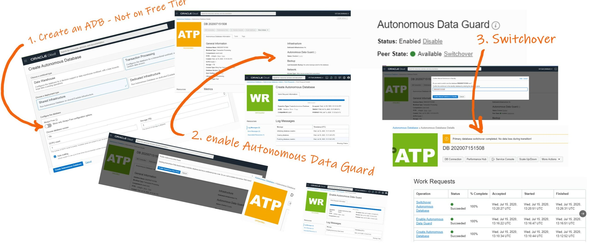
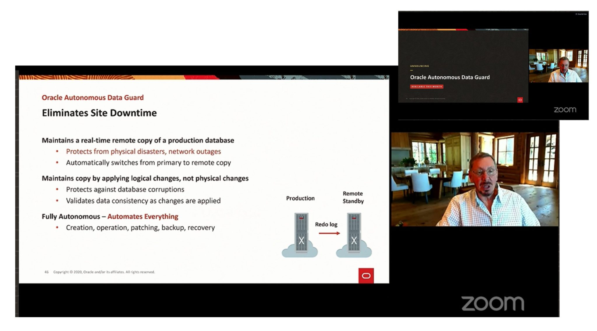
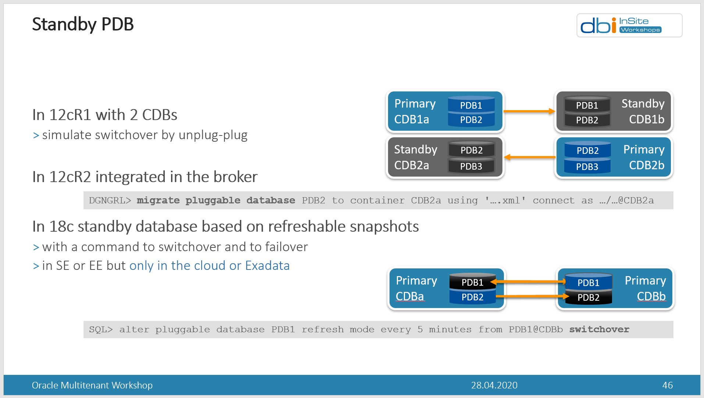

This was first published on https://www.dbi-services.com/blog/a-serverless-standby-database-called-oracle-autonomous-data-guard/ (2020-07-16)
Republishing here for new followers. The content is related to the versions available at the publication date.
.
Announced by Larry Ellison last week, here it is: the Autonomous Data Guard. You can try it, unfortunately not on the Free Tier.
First you create an Autonomous Database (ATP or ADW) and then you enable Autonomous Data Guard.

You know that “Autonomous” is the marketing brand for the services that automate a lot of things, sometimes based on features that are in Oracle Database for a long time. So let’s see what is behind.

The slide for the announce mentions that this service maintains a remote copy. That’s right. But the message that it “maintains copy by applying logical changes, not physical changes” is not correct and misleading. What we call “logical changes apply” is logical replication where the changes are transformed to SQL statements and then can be applied to another database that can be a different version, different design,… Like Golden Gate. But Autonomous Data Guard is replicating physical changes. It applies the redo to an exact physical copy of the datafile blocks. Like… a Data Guard physical standby.
But why did Larry Ellison mention “logical” then? Because the apply is at software level. And this is a big difference from storage level synchronisation. We use the term “logical corruption” when a software bug corrupts some data. And we use “physical corruption” when the software write() is ok but the storage write to disk is wrong. And this is why “logical changes” is mentioned there: this software level replication protects from physical corruptions. Data Guard can even detect lost writes between the replicas.
And this is an important message for Oracle because on AWS RDS the standby databases for HA in multi-AZ is at storage level. AWS RDS doesn’t use Data Guard for multi-AZ Oracle. Note that it is different with other databases like Aurora where the changes are written to 6 copies from software redo, Or RDS SQL Server where multi-AZ relies on Always-On.
So, it is not a logical copy but a physical standby database. The point is that it is synchronized by the database software which is more reliable (protects for storage corruption) and more efficient (not all changes need to be replicated and only a few of them must be in sync waiting for the acknowledge).
Yes, all is automated. The only thing you do is enable it and switchover. Those things are not new. Data Guard was automated in previous versions or the Oracle Database, with the Data Guard Broker, with DBCA creating a standby, with recover from services, and even with automatic failover (FSFO and observer). More than that, “autonomous” means transparent: it happens without service interruption. And that again can be based on many existing features, Application Continuity, Connection Manager Traffic Director,…
So yes it is autonomous and up to a level where the competitors lagging are behind. Currently, AWS application failover is mostly based on DNS changes with all problems coming from caches and timeouts. However, recently, AWS has reduced the gap with AWS RDS Proxy, which is quite new.
This time I totally agree with the term “autonomous”. And I even think it could have been labeled as “serverless” because you don’t see the standby server: you don’t choose the shape, you don’t connect to it. I don’t even see the price 😉 but I’ll update this post as soon as I have found it. Well, I defined what is a “serverless database” in a previous post. About the price, we are not serverless: we still pay for idle CPUs.
Ok, you don’t see the price but it comes to the Cost Report after two days and… bad news: you pay for the idle CPU and the standby storage at the same price as the primary:
And the numbers are there: when I increased OCPU to 2 I was billed for 4… pic.twitter.com/zpOlcnL4sB
— Franck Pachot (@FranckPachot) July 21, 2020
Oh, that’s a great question. And I don’t think we can answer it now. I mentioned many features that can be autonomous, like creating a standby, having a broker to maintain the states, an observer to do the failover,… But that’s all at CDB level in multitenant. However, an Autonomous Database is a PDB. All recovery stuff like redo log shipping is done at CDB level. At least in the current version of it (19c).
However, from the beginning of multitenant, we want to do with a PDB the same things we do with a database. And each release came with more features to look like a standby PDB. Here is a slide I use to illustrate “PDB Switchover”:

So is this Autonomous Data Guard a multitenant feature (refreshable clone) or is it a Data Guard feature? Maybe both.The documentation mentions a RPO of zero for Automatic Failover and a RPO of 5 minutes for manual failover. I don’t think we can have RPO=0 with refreshable clones as the redo is applied with a job that runs every few minutes. So, the automatic failover is probably at CDB level: when the whole CDB is unavailable, as detected by the observer, and standby is in sync, then the standby CDB is activated and all sessions are redirected there (we connect though a Connection Manager). For a manual failover, this must touch only our PDB, and that’s done with a refreshable PDB switchover. They mention RPO=5 minutes because that’s probably to automatic refresh frequency. Then, a manual failover may loose 5 minutes of transactions if the primary is not available. You cannot initiate a failover yourself when the autonomous database is available. When it is available, that’s a switchover without any transaction loss.
So, for the moment in 19c I think that this Autonomous Data Guard is a combination of Data Guard to protect from global failure (failover the whole CDB to another availability domain) and Refreshable PDB for manual failover/switchover. But if you look at the 20c binaries and hidden parameters, you will see more and more mentions of “standby redo logs” and “standby control files” in functions that are related to the PDBs. So you know where it goes: Autonomous means PDB and Autonomous Data Guard will probably push many physical replication features at PDB level. And, once again, when this implementation detail is hidden (do you failover to a CDB standby or a PDB clone?) that deserves a “serverless” hashtag, right? Or should I say that an Autonomous Database is becoming like a CDB-less PDB, where you don’t know in which CDB your PDB is running?
Here is my PDB History after a few manual switchovers:
SQL> select * from dba_pdb_history;
PDB_NAME PDB_ID PDB_DBID PDB_GUID OP_SCNBAS OP_SCNWRP OP_TIMESTAMP OPERATION DB_VERSION CLONED_FROM_PDB_NAME CLONED_FROM_PDB_DBID CLONED_FROM_PDB_GUID DB_NAME DB_UNIQUE_NAME DB_DBID CLONETAG DB_VERSION_STRING
_________________________________ _________ _____________ ___________________________________ _____________ ____________ _______________ ____________ _____________ ___________________________________________________________________ _______________________ ___________________________________ __________ _________________ _____________ ___________ ____________________
DWCSSEED 3 2852116004 9D288B8436DC5D21E0530F86E50AABD0 1394780 0 27.01.20 CREATE 318767104 PDB$SEED 1300478808 9D274DFD3CEF1D1EE0530F86E50A3FEF POD POD 1773519138 19.0.0.0.0
OLTPSEED 13 877058107 9EF2060B285F15A5E053FF14000A3E66 14250364 0 19.02.20 CLONE 318767104 DWCSSEED 2852116004 9D288B8436DC5D21E0530F86E50AABD0 CTRL5 CTRL5 1593803312 19.0.0.0.0
OLTPSEED_COPY 4 3032004105 AA768E27A41904D5E053FF14000A4647 34839618 0 15.07.20 CLONE 318767104 OLTPSEED 877058107 9EF2060B285F15A5E053FF14000A3E66 CTRL5 CTRL5 1593803312 19.0.0.0.0
OLTPSEED_COPY 4 3032004105 AA768E27A41904D5E053FF14000A4647 34841402 0 15.07.20 UNPLUG 318767104 0 CTRL5 CTRL5 1593803312 19.0.0.0.0
POOLTENANT_OLTPSEED21594803198 289 3780898157 AA780E2370A0AB9AE053DB10000A1A31 3680404503 8559 15.07.20 PLUG 318767104 POOLTENANT_OLTPSEED21594803198 3032004105 AA768E27A41904D5E053FF14000A4647 E3Z1POD e3z1pod 1240006038 19.0.0.0.0
CQWRIAXKGYBKVNX_DB202007151508 289 3780898157 AA780E2370A0AB9AE053DB10000A1A31 3864706491 8559 15.07.20 RENAME 318767104 POOLTENANT_OLTPSEED21594803198 3780898157 AA780E2370A0AB9AE053DB10000A1A31 E3Z1POD e3z1pod 1240006038 19.0.0.0.0
CQWRIAXKGYBKVNX_DB202007151508 231 1129302642 AA780E2370A0AB9AE053DB10000A1A31 3877635830 8559 15.07.20 CLONE 318767104 CQWRIAXKGYBKVNX_DB202007151508@POD_CDB_ADMIN$_TEMPDBL_PCOUV6FR5J 3780898157 AA780E2370A0AB9AE053DB10000A1A31 EKG1POD ekg1pod 918449036 19.0.0.0.0
CQWRIAXKGYBKVNX_DB202007151508 336 1353046666 AA780E2370A0AB9AE053DB10000A1A31 4062625844 8559 15.07.20 CLONE 318767104 CQWRIAXKGYBKVNX_DB202007151508@POD_CDB_ADMIN$_TEMPDBL_LXW8COMBRV 3780898157 AA780E2370A0AB9AE053DB10000A1A31 E3Z1POD e3z1pod 1240006038 19.0.0.0.0
CQWRIAXKGYBKVNX_DB202007151508 258 1792891716 AA780E2370A0AB9AE053DB10000A1A31 4090531039 8559 15.07.20 CLONE 318767104 CQWRIAXKGYBKVNX_DB202007151508@POD_CDB_ADMIN$_TEMPDBL_YJSIBZ76EE 3780898157 AA780E2370A0AB9AE053DB10000A1A31 EKG1POD ekg1pod 918449036 19.0.0.0.0
CQWRIAXKGYBKVNX_DB202007151508 353 2591868894 AA780E2370A0AB9AE053DB10000A1A31 4138073371 8559 15.07.20 CLONE 318767104 CQWRIAXKGYBKVNX_DB202007151508@POD_CDB_ADMIN$_TEMPDBL_LJ47TUYFEX 3780898157 AA780E2370A0AB9AE053DB10000A1A31 E3Z1POD e3z1pod 1240006038 19.0.0.0.0
10 rows selected.
You see the switchover as a ‘CLONE’ operation. A clone with the same GUID. The primary was the PDB_DBID=1792891716 that was CON_ID=258 in its CDB. And the refreshable clone PDB_DBID=2591868894 opened as CON_ID=353 is the one I switched over, which is now the primary.
I have selected from DBA_PDBS as json-formatted (easy in SQLcl) to show the columns in lines:
{
"pdb_id" : 353,
"pdb_name" : "CQWRIAXKGYBKVNX_DB202007151508",
"dbid" : 3780898157,
"con_uid" : 2591868894,
"guid" : "AA780E2370A0AB9AE053DB10000A1A31",
"status" : "NORMAL",
"creation_scn" : 36764763159835,
"vsn" : 318767104,
"logging" : "LOGGING",
"force_logging" : "NO",
"force_nologging" : "NO",
"application_root" : "NO",
"application_pdb" : "NO",
"application_seed" : "NO",
"application_root_con_id" : "",
"is_proxy_pdb" : "NO",
"con_id" : 353,
"upgrade_priority" : "",
"application_clone" : "NO",
"foreign_cdb_dbid" : 918449036,
"unplug_scn" : 36764717154894,
"foreign_pdb_id" : 258,
"creation_time" : "15.07.20",
"refresh_mode" : "NONE",
"refresh_interval" : "",
"template" : "NO",
"last_refresh_scn" : 36764763159835,
"tenant_id" : "(DESCRIPTION=(TIME=1594839531009)(TENANT_ID=29A6A11B6ACD423CA87B77E1B2C53120,29A6A11B6ACD423CA87B77E1B2C53120.53633434F47346E29EE180E736504429))",
"snapshot_mode" : "MANUAL",
"snapshot_interval" : "",
"credential_name" : "",
"last_refresh_time" : "15.07.20",
"cloud_identity" : "{\n \"DATABASE_NAME\" : \"DB202007151508\",\n \"REGION\" : \"us-ashburn-1\",\n \"TENANT_OCID\" : \"OCID1.TENANCY.OC1..AAAAAAAACVSEDMDAKDVTTCMGVFZS5RPB6RTQ4MCQBMCTZCVCR2NWDUPYLYEQ\",\n \"DATABASE_OCID\" : \"OCID1.AUTONOMOUSDATABASE.OC1.IAD.ABUWCLJSPZJCV2KUXYYEVTOZSX7K5TXGYOHXMIGWUXN47YPGVSAFEJM3SG2A\",\n \"COMPARTMENT_OCID\" : \"ocid1.tenancy.oc1..aaaaaaaacvsedmdakdvttcmgvfzs5rpb6rtq4mcqbmctzcvcr2nwdupylyeq\",\n \"OUTBOUND_IP_ADDRESS\" :\n [\n \"150.136.133.92\"\n ]\n}"
}
You can see, from the LAST_REFRESH_SCN equal to the CREATION_SCN, that the latest committed transactions were synced at the time of the switchover: the ATP service shows: “Primary database switchover completed. No data loss during transition!”
And here is the result from the same query before the switchover (I display only what had changed):
"pdb_id" : 258,
"con_uid" : 1792891716,
"creation_scn" : 36764715617503,
"con_id" : 258,
"foreign_cdb_dbid" : 1240006038,
"unplug_scn" : 36764689231834,
"foreign_pdb_id" : 336,
"last_refresh_scn" : 36764715617503,
"tenant_id" : "(DESCRIPTION=(TIME=1594835734415)(TENANT_ID=29A6A11B6ACD423CA87B77E1B2C53120,29A6A11B6ACD423CA87B77E1B2C53120.53633434F47346E29EE180E736504429))",PDB_ID and CON_ID were different because plugged in a different CDB. But DBID and GUID are the same on the primary and the clone because it is the same datafile content. The FOREIGN_CDB_DBID and FOREIGN_PDB_ID is what references the primary from the standby and the standby from the primary. The LAST_REFRESH_SCN is always equal to the CREATION_SCN, when I query it from the primary, as it was activated without data loss. I cannot query the refreshable clone when it is in standby role.
Autonomous and Serverless doesn’t mean Traceless, fortunately:
SQL> select payloadfrom GV$DIAG_TRACE_FILE_CONTENTS where TRACE_FILENAME in ('e3z1pod4_ora_108645.trc') order by timestamp;
PAYLOAD
--------------------------------------------------------------------------------------------------------------------------------------------------------------------------------------------------------------------------------------------------------------------------
*** 2020-07-15T18:33:16.885602+00:00 (CQWRIAXKGYBKVNX_DB202007151508(353))
Started Serial Media Recovery
Loading kcnibr for container 353
Dumping database incarnation table:
Resetlogs 0 scn and time: 0x00000000001df6a8 04/23/2020 20:44:09
Dumping PDB pathvec - index 0
0000 : pdb 353, dbinc 3, pdbinc 0
db rls 0x00000000001df6a8 rlc 1038516249
incscn 0x0000000000000000 ts 0
br scn 0x0000000000000000 ts 0
er scn 0x0000000000000000 ts 0
0001 : pdb 353, dbinc 2, pdbinc 0
db rls 0x00000000001db108 rlc 1038516090
incscn 0x0000000000000000 ts 0
br scn 0x0000000000000000 ts 0
er scn 0x0000000000000000 ts 0
Recovery target incarnation = 3, activation ID = 0
Influx buffer limit = 100000 min(50% x 29904690, 100000)
Start recovery at thread 7 ckpt scn 36764741795405 logseq 0 block 0
*** 2020-07-15T18:33:17.181814+00:00 (CQWRIAXKGYBKVNX_DB202007151508(353))
Media Recovery add redo thread 7
*** 2020-07-15T18:33:17.228175+00:00 (CQWRIAXKGYBKVNX_DB202007151508(353))
Media Recovery add redo thread 1
*** 2020-07-15T18:33:17.273432+00:00 (CQWRIAXKGYBKVNX_DB202007151508(353))
Media Recovery add redo thread 2
*** 2020-07-15T18:33:17.318517+00:00 (CQWRIAXKGYBKVNX_DB202007151508(353))
Media Recovery add redo thread 3
*** 2020-07-15T18:33:17.363512+00:00 (CQWRIAXKGYBKVNX_DB202007151508(353))
Media Recovery add redo thread 4
*** 2020-07-15T18:33:17.412186+00:00 (CQWRIAXKGYBKVNX_DB202007151508(353))
Media Recovery add redo thread 5
*** 2020-07-15T18:33:17.460044+00:00 (CQWRIAXKGYBKVNX_DB202007151508(353))
Media Recovery add redo thread 6
*** 2020-07-15T18:33:17.502354+00:00 (CQWRIAXKGYBKVNX_DB202007151508(353))
Media Recovery add redo thread 8
*** 2020-07-15T18:33:17.575400+00:00 (CQWRIAXKGYBKVNX_DB202007151508(353))
Media Recovery Log /u02/nfsad1/e19pod/parlog_7_2609_1_1035414033.arc
krr_open_logfile: Restricting nab of log-/u02/nfsad1/e19pod/parlog_7_2609_1_1035414033.arc, thr-7, seq-2609 to 2 blocks.recover pdbid-258
*** 2020-07-15T18:33:17.620308+00:00 (CQWRIAXKGYBKVNX_DB202007151508(353))
Media Recovery Log /u02/nfsad1/e19pod/parlog_1_2610_1_1035414033.arc
Generating fake header for thr-1, seq-2610
*** 2020-07-15T18:33:17.651042+00:00 (CQWRIAXKGYBKVNX_DB202007151508(353))
Media Recovery Log /u02/nfsad1/e19pod/parlog_2_2604_1_1035414033.arc
krr_open_logfile: restrict nab of remote log with thr#-2, seq#-2604, file-/u02/nfsad1/e19pod/parlog_2_2604_1_1035414033.arc, kcrfhhnab-43080320, newnab-43080320
*** 2020-07-15T18:33:41.867605+00:00 (CQWRIAXKGYBKVNX_DB202007151508(353))
Media Recovery Log /u02/nfsad1/e19pod/parlog_3_2696_1_1035414033.arc
Generating fake header for thr-3, seq-2696
*** 2020-07-15T18:33:41.900123+00:00 (CQWRIAXKGYBKVNX_DB202007151508(353))
Media Recovery Log /u02/nfsad1/e19pod/parlog_4_2585_1_1035414033.arc
Generating fake header for thr-4, seq-2585
*** 2020-07-15T18:33:41.931004+00:00 (CQWRIAXKGYBKVNX_DB202007151508(353))
Media Recovery Log /u02/nfsad1/e19pod/parlog_5_2967_1_1035414033.arc
Generating fake header for thr-5, seq-2967
*** 2020-07-15T18:33:41.963625+00:00 (CQWRIAXKGYBKVNX_DB202007151508(353))
Media Recovery Log /u02/nfsad1/e19pod/parlog_6_2611_1_1035414033.arc
Generating fake header for thr-6, seq-2611
*** 2020-07-15T18:33:41.998296+00:00 (CQWRIAXKGYBKVNX_DB202007151508(353))
Media Recovery Log /u02/nfsad1/e19pod/parlog_8_2586_1_1035414033.arc
Generating fake header for thr-8, seq-2586
*** 2020-07-15T18:33:53.033726+00:00 (CQWRIAXKGYBKVNX_DB202007151508(353))
Media Recovery drop redo thread 8
*** 2020-07-15T18:33:53.033871+00:00 (CQWRIAXKGYBKVNX_DB202007151508(353))
Media Recovery drop redo thread 6
*** 2020-07-15T18:33:53.033946+00:00 (CQWRIAXKGYBKVNX_DB202007151508(353))
Media Recovery drop redo thread 5
*** 2020-07-15T18:33:53.034015+00:00 (CQWRIAXKGYBKVNX_DB202007151508(353))
Media Recovery drop redo thread 4
*** 2020-07-15T18:33:53.034154+00:00 (CQWRIAXKGYBKVNX_DB202007151508(353))
Media Recovery drop redo thread 3
*** 2020-07-15T18:33:53.034239+00:00 (CQWRIAXKGYBKVNX_DB202007151508(353))
Media Recovery drop redo thread 1
*** 2020-07-15T18:33:53.034318+00:00 (CQWRIAXKGYBKVNX_DB202007151508(353))
Media Recovery drop redo thread 7
==== Redo read statistics for thread 2 ====
Total physical reads (from disk and memory): 21540159Kb
-- Redo read_disk statistics --
Read rate (ASYNC): 21540159Kb in 35.77s => 588.07 Mb/sec
Total redo bytes: 21540159Kb Longest record: 12Kb, moves: 20988/2785829 moved: 179Mb (0%)
Longest LWN: 31106Kb, reads: 5758
Last redo scn: 0x0000216ff58a3d72 (36764744564082)
Change vector header moves = 264262/2971514 (8%)
----------------------------------------------
*** 2020-07-15T18:33:53.034425+00:00 (CQWRIAXKGYBKVNX_DB202007151508(353))
Media Recovery drop redo thread 2
KCBR: Number of read descriptors = 1024
KCBR: Media recovery blocks read (ASYNC) = 77
KCBR: Influx buffers flushed = 9 times
KCBR: Reads = 2 reaps (1 null, 0 wait), 1 all
KCBR: Redo cache copies/changes = 667/667
*** 2020-07-15T18:33:53.187031+00:00 (CQWRIAXKGYBKVNX_DB202007151508(353))
Completed Media Recovery
----- Abridged Call Stack Trace -----
ksedsts()+426<-krdsod()+251<-kss_del_cb()+218<-kssdel()+216<-krdemr()+5836<-krd_end_rcv()+609<-dbs_do_recovery()+3232<-dbs_rcv_start_main()+4890<-dbs_rcv_start()+115<-kpdbcRecoverPdb()+1039<-kpdbSwitch()+3585<-kpdbcApplyRecovery()+2345<-kpdbcRefreshPDB()+12073<-kpdbSwitchRunAsSysCbk()+20<-rpiswu2()+2004<-kpdbSwitch()+3563<-kpdbcRefreshDrv()+1410<-kpdbSwitch()+3585<-kpdbadrv()+34922<-opiexe()+26658<-opiosq0()+4635<-opipls()+14388<-opiodr()+1202<-rpidrus()+198<-skgmstack()+65<-rpidru()+132<-rpiswu2()+543<-rpidrv()+1266
*** 2020-07-15T18:33:53.252481+00:00 (CQWRIAXKGYBKVNX_DB202007151508(353))
<-psddr0()+467<-psdnal()+624<-pevm_EXIM()+282<-pfrinstr_EXIM()+43<-pfrrun_no_tool()+60<-pfrrun()+902<-plsql_run()+755<-peicnt()+279<-kkxexe()+720<-opiexe()+31050<-kpoal8()+2226<-opiodr()+1202<-ttcpip()+1239<-opitsk()+1897<-opiino()+936<-opiodr()+1202<-opidrv()+1094
<-sou2o()+165<-opimai_real()+422<-ssthrdmain()+417<-main()+256<-__libc_start_main()+245
----- End of Abridged Call Stack Trace -----
Partial short call stack signature: 0x43b703b8697309f4
Unloading kcnibr
Elapsed: 01:00:03.376
Looking at the call stack (kpdbcRecoverPdb<-kpdbSwitch<-kpdbcApplyRecovery<-kpdbcRefreshPDB<-kpdbSwitchRunAsSysCbk<-rpiswu2<-kpdbSwitch<-kpdbcRefreshDrv<-kpdbSwitch) it is clear that Autonomous Data Guard manual switchover is nothing else than a “Refreshable PDB Switchover”, feature introduced in 18c and available only on Oracle Engineered Systems (Exadata and ODA) and Oracle Cloud. At least for the moment.